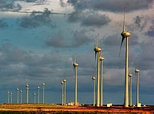

Energia Estatísticas Vida Sustentável
O Potencial
Fotovoltaico Brasileiro
é Enorme!

Economia Verde: Integrando Desenvolvimento Econômico,
Preservação Ambiental e Inclusão Social
O ano de 2022 foi marcado pelo avanço da energia
renovável no Brasil. O país ultrapassou o marco de
92% de participação de usinas hidrelétricas, eólicas,
solares e de biomassa no total gerado pelo Sistema
Interligado Nacional - SIN, o maior percentual dos
últimos 10 anos.